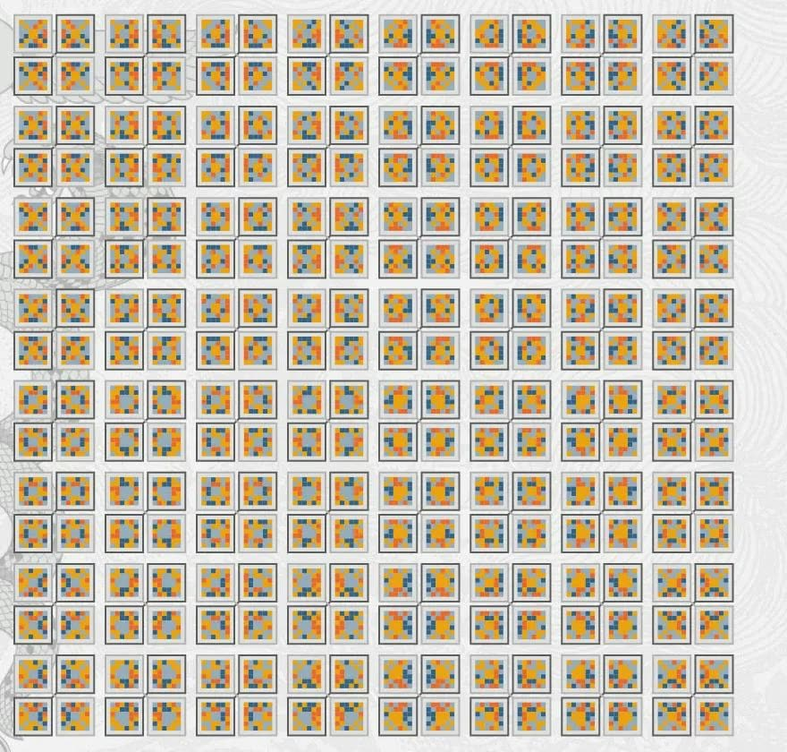
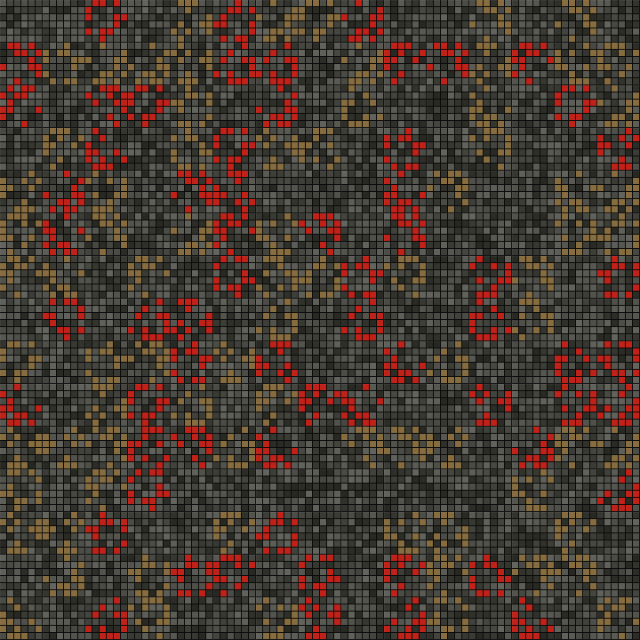

Other languages: Français
The encoder: hiding is not protecting
By Anibal Edelberto Amiot — Published September 16, 2026 · translated from the French
“The secret of a message must never be the secret of the method that writes it.”
An admission at the top of the page
In the encoder's explanation tab there is a sentence worth pausing over: confidentiality comes from the encryption, not from the geometry.
It is there to defuse what a tool like this one naturally suggests. A message concealed in a grid of numbers, at positions designated by squares drawn from an ansate cross and by the layers of a Jacquard loom — the imagination runs quickly, and it runs to the wrong place. It imagines that the complexity of the device is what makes it strong.
It is not. The geometry chooses where to write. What is written is already encrypted before the geometry comes in. If the encryption falls, no subtlety of placement will save the message; if the encryption holds, the placement adds nothing to its strength. These are two layers that do two different things, and confusing them is the mistake this page refuses to let anyone make.
Kerckhoffs, 1883
The principle the encoder invokes by name dates from 1883. Auguste Kerckhoffs, a Dutch linguist settled in France, then set out what would become the golden rule of modern cryptography: a system must remain secure even if everything about how it works is known, except the key.
The idea is counter-intuitive. It goes against the reflex of protecting one's method as much as one's message. But the reasoning is relentless: a method always ends up being known — through indiscretion, through the capture of a device, through analysis. Security that relied on its being unknown is security whose expiry date is unknown to whoever trusts it.
This puts steganography in a delicate position, and it must be named. To conceal the existence of a message is to bet on the adversary's inattention, not on their ignorance of the method. An observer who knows that a grid of numbers contains a message, and who knows the algorithm down to the arrangement of the cells, has gained nothing by it: what they find at the designated positions is ciphertext, uniform, offering no purchase. The concealment cost them nothing, and it gave them nothing.
Hence the order of operations. Encrypt first, conceal afterwards. The first layer resists whoever knows; the second avoids drawing the attention of whoever does not yet know. One protects, the other makes discreet. Confusing them is believing that a locked door and a door painted in trompe-l'œil offer the same service.
An audit, and zero bits
The most instructive passage of the page is the one where it reports the result of an audit.
A first version of the system included one more key — a secret shuffling of the referent's shapes — whose apparent space was counted in thousands of bits. A number beyond comprehension, far beyond the number of atoms in the observable universe. One might have thought this key decisive.
The audit found that it contributed zero bits of security. It was entirely redundant with another key of the system: everything it made it possible to express, the other already expressed. An adversary searching for one had no additional work to do for the other.
It is worth weighing what this gap means. Between thousands of apparent bits and zero real bits there is not a miscalculation — there is the difference between counting the possible configurations and counting those that are distinguishable. This is the most common trap of amateur cryptography: building a system whose key space is immense and whose space of effects is narrow. The same lesson holds for the geometry itself: 256 squares, 360 layers, eight reading directions — that makes a great many arrangements, and not one bit of key. The security lies in the 256 bits of the encryption key, and nowhere else.
That this discovery appears on the page rather than having been quietly corrected says something about the method. The redundant key was removed. The system lost an impressive number and lost nothing of its security, since it drew none from it.
Two referents
What remains is what the geometry really does, which is something other than protection: it provides a vocabulary of positions.
The Referent 256 comes from the ansate cross of order 6: the two hundred and fifty-six magic squares that the book's construction generates, one hundred and twenty-eight of each chirality. Each square colours its thirty-six cells in four colours — six, six, twelve and twelve — and it is the two small colours, twelve cells, that carry the writing. The rest of the square is the background.
The Referent 360 comes from the Jacquard loom with three hundred and sixty layers: six levels of twenty-four cells, and sixty layers available at each level. A shape is a choice of one layer per level; the writing colour designates eight cells per level, forty-eight per twelve-by-twelve block.
These two systems were not invented for encryption. They existed as grammars of patterns — one born of a figure, the other of a weaving technique. Their use here does not divert them: a Jacquard loom is a machine for reading positions, card after card, and it is as such that it is counted among the ancestors of computing. Having it designate the cells of a message is not a metaphor; it is its proper use applied to other content.
And it can be changed. The referent is a parameter of the encoder, not a part of its mechanism: the squares of the ansate cross can be replaced by randomly drawn shapes — this is what the tool's Carter-Random variant does — or the two can be mixed on one grid, without anything changing in what protects the message. That is the result the page claims, and it is the only one.

Noise and grain
In concrete terms, the encrypted message is written into a ninety-by-ninety grid filled with random symbols. A geometry key governs the reading: the role of each block, the shape of the referent it takes, the direction in which its cells are traversed. The designated cells carry the ciphertext; all the others carry noise.
The expression the page uses is apt — the rest is indistinguishable noise. Indistinguishable, not absent: that is what holds the whole together. A grid in which the useful cells stood out from the others by any statistical property whatsoever would betray its content without anyone needing a key. That is why the ciphertext is masked again before being laid down, and converted into the same alphabet as the noise, symbol for symbol: in the end, a written cell and an empty cell look exactly alike.
There is a requirement here that meets, without seeking to, that of weaving. A successful weave is one in which you cannot see the starting point, nor the join, nor the place where the pattern changed. The regularity of a surface is what allows an irregularity to disappear into it.

What the tool offers
The page is not a fixed demonstration. It opens onto a message, a decryption, an X25519 key exchange, an encrypted vault, file encryption, the ninety-by-ninety Carter grid, and the complete table of the two referents, which can be browsed shape by shape.
The underlying encryption has nothing special about it, and that is deliberate: XChaCha20-Poly1305 for the message itself — the same implementation, in pure JavaScript, on both sides of the site, checked byte for byte against the reference Python code — AES-256-GCM for the vault and file encryption, X25519 for the key exchange. Standard, public primitives, studied for years by people whose job it is. The original part of the system is the part that places, not the part that protects — and it is better that way. Inventing one's own encryption is the mistake every cryptography handbook teaches you not to make.
What to expect from it
Try the demonstration tab. Watch the grid fill up, and look for where the cells carrying the message are. You will not find them — but that is not the point.
The point is to see a grammar of patterns, born to adorn fabric, turn out to be capable of designating positions in a grid precisely enough for a text to lodge there and be extracted from it. What passes from one domain to the other is not a secret. It is a way of counting and ordering, which does not care what it is asked to count.
And if there is one thing to remember from this page, let it be its most sober sentence: hiding is not protecting. Both gestures have their use. They do not replace each other.
Try the tool → Open the encoder (in French).
This article was first published in French: L'encodeur : cacher n'est pas protéger.